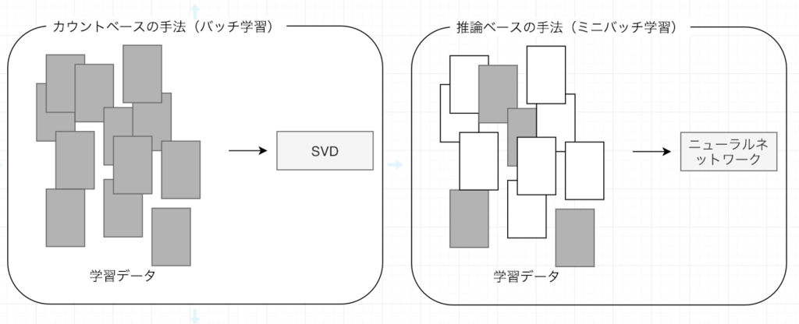
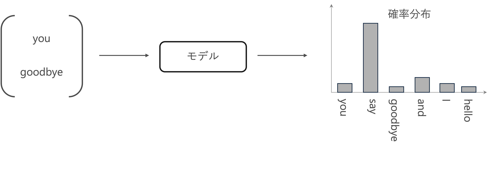

word2vec
Contents
word2vec#
前章では、「カウントベースの手法」によって単語分散表現を得ました。具体的には、単語の共起行列を作り、その行列に対してSVDを適用することで、密なベクトくー 単語分散表現ーを獲得したのです。
しかし、カウントベースの手法にはいくつかの問題点があります。
大規模なコーパスを扱う場合、巨大な共起行列に対してSVDを計算することが難しい。
コーパスの全体から一回の学習で単語分散表現を獲得していますので、新しい単語が追加される場合、再度最初から学習を行う必要があり、単語分散表現更新の効率が低い。
「カウントベースの手法」に代わる強力な手法として「推論ベース」の手法が挙げられます。特に、Mikolov et al. [Mikolov et al., 2013] [Mikolov et al., 2013] によって提案されたword2vecの有用性が多くの自然言語処理タスクにおいて示されてきたのです。
本章では、word2vecの仕組みについて説明し、それを実装することで理解を深めます。
推論ベース手法とニューラルネットワーク#
推論ベースの手法は、ミニバッチで学習する形で、ニューラルネットワークを用いて、重みを繰り返し更新することで単語分散表現を獲得します。

推論ベース手法の設計#
推論ベース手法では、you 【？】 goodbye and I say hello .のような、周囲の単語が与えられたときに、【？】にどのような単語が出現するのかを推測する推論問題を繰り返し解くことで、単語の出現バターンを学習します。
つまり、コンテキスト情報を入力として受け取り、各単語の出現する確率を出力する「モデル」を作成することは目標になります。ここで、正しい推測ができるように、コーパスを使って、ニューラルネットワークモデルの学習を行います。そして、その学習の結果として、単語の分散表現を得られます。

one-hot表現#
ニューラルネットワークで単語を処理するには、それを「固定長のベクトル」に変換する必要があります。
そのための方法の一つは、単語をone-hot表現へと変換することです。one-hot表現とは、ベクトルの要素の中で一つだけが\(1\)で、残りは全て\(0\)であるようなベクトルと言います。
単語をone-hot表現に変換するには、語彙数分の要素を持つベクトルを用意して、単語IDの該当する箇所を\(1\)に、残りは全て\(0\)に設定します。

CBOW（continuous bag-of-words）モデル#
CBOWモデルは、コンテキストからターゲットを推測することを目的としたニューラルネットワークです。このCBOWモデルで、できるだけ正確な推測ができるように訓練することで、単語の分散表現を取得することができます。
ここで、例として、コンテキスト["you","goodbye"]からターゲット"say"を予測するタスクを考えます。
入力層から中間層(エンコード)#
one-hotエンコーディングで、単語を固定長のベクトルに変換するすることができます。
単語をベクトルで表すことができれば、そのベクトルはニューラルネットワークを構成する「レイヤ」によって処理することができるようになりました。
コンテキストを\(\mathbf{c}\)、重みを\(\mathbf{W}\)とし、それぞれ次の形状とします。
コンテキストの要素数(列数)と重みの行数が、単語の種類数に対応します。
コンテキスト(単語)はone-hot表現として扱うため、例えば「you」の場合は
とすることで、単語「you」を表現できます。
重み付き和\(\mathbf{h}\)は、行列の積で求められます。
\(h_1\)の計算を詳しく見ると、次のようになります。
コンテキストと重みの対応する(同じ単語に関する)要素を掛けて、全ての単語で和をとります。しかしコンテキストは、\(c_{you}\)以外の要素が\(0\)なので、対応する重みの値の影響は消えていまします。また\(c_{you}\)は\(1\)なので、対応する重みの値\(w_{\mathrm{you},1}\)がそのまま中間層のニューロンに伝播します。
残りの2つの要素も同様に計算できるので、重み付き和
は、単語「you」に関する重みの値となります。
import numpy as np
# 適当にコンテキスト(one-hot表現)を指定
c = np.array([[1, 0, 0, 0, 0, 0, 0]])
print(f"コンテキストの形状：{c.shape}")
# 重みをランダムに生成
W = np.random.randn(7, 3)
print(f"重み\n{W}")
# 重み付き和を計算
h = np.dot(c, W)
print(f"重み付き和\n{h}")
print(f"重み付き和の形状：{h.shape}")
コンテキストの形状：(1, 7)
重み
[[ 1.71670313e+00 -8.63625037e-01 -5.35290530e-01]
[-5.60747899e-01 1.50208489e+00 -1.67966102e+00]
[ 1.81526839e+00 -1.17667527e+00 4.48485314e-01]
[-8.65600176e-02 2.37075284e+00 6.47776688e-02]
[-2.33527217e+00 -6.69067439e-01 -1.44158917e+00]
[-9.21024532e-01 -9.52111113e-01 1.16383682e-03]
[ 2.74139129e+00 1.92697421e-01 8.97070946e-02]]
重み付き和
[[ 1.71670313 -0.86362504 -0.53529053]]
重み付き和の形状：(1, 3)
コンテキストに複数な単語がある場合、入力層も複数になります。このとき、中間層にあるニューロンは、各入力層の全結合による変換後の値が平均されたものになります。
中間層のニューロンの数を入力層よりも減らすことによって、中間層には、単語を予測するために必要な情報が”コンパクト”に収められて、結果としては密なベクトル表現が得られます。このとき、この中間層の情報は、人間には理解できない「ブラックボックス」ような状態になります。この作業は、「エンコード」と言います。
中間層から出力層(デコード)#
中間層の情報から目的の結果を得る作業は、「デコード」と言います。ここでは、中間層のニューロンの値\(\mathbf{h}\)を各単語に対応した値になるように、つまり要素(行)数が単語の種類数となるように再度変換したものを、CBOWモデルの出力とします。
出力層の重みを
とします。行数が中間層のニューロン数、列数が単語の種類数になります。
出力層も全結合層とすると、最終的な出力は
例えば、「you」に関する要素の計算は、
コンテキストに対応する入力層の重みの平均と「you」に関する出力の重みの積になります。
他の要素(単語)についても同様に計算できるので、最終的な出力は
となります。
ここで、出力層のニューロンは各単語に対応し、各単語の「スコア」と言います。
「スコア」の値が高ければ高いほど、それに対応する単語の出現確率も高くなり、ターゲットの単語であるとして採用します。そのため、スコアを求める処理を推論処理と言います。
import torch
import torch.nn as nn
import numpy as np
# Define the context data
c0 = torch.tensor([[1, 0, 0, 0, 0, 0, 0]], dtype=torch.float32) # you
c1 = torch.tensor([[0, 0, 1, 0, 0, 0, 0]], dtype=torch.float32) # goodbye
# Initialize weights randomly
W_in = torch.randn(7, 3, requires_grad=False) # Input layer weights
W_out = torch.randn(3, 7, requires_grad=False) # Output layer weights
# Define the layers using PyTorch's functional API
def in_layer(x, W):
return torch.matmul(x, W)
def out_layer(h, W):
return torch.matmul(h, W)
# Forward pass through the input layers
h0 = in_layer(c0, W_in) # you
h1 = in_layer(c1, W_in) # goodbye
h = 0.5 * (h0 + h1)
# Forward pass through the output layer (scores)
s = out_layer(h, W_out)
# Print the outputs
h0, h1, h, torch.round(s, decimals=3)
(tensor([[ 0.1224, -0.2435, -2.1643]]),
tensor([[-1.4105, -1.4011, -0.0061]]),
tensor([[-0.6440, -0.8223, -1.0852]]),
tensor([[ 1.9580, -2.4850, -1.3920, 0.3000, -0.5260, 2.7190, 0.8220]]))
正解は「say」として、Softmax関数によってスコアsを確率として扱えるように変換し、そして、正規化した値と教師ラベルを用いて損失を求めなさい。
正解は「say」の場合、教師ラベルは[0, 1, 0, 0, 0, 0, 0]になります。
word2vecの重みと分散表現#
与えられたコンテキストに対して単語を予測するときに、「良い重み」のネットワークがあれば、「確率」を表すニューロンにおいて、正解に対応するニューロンが高くなっていることが期待できます。そして、大規模コーパスを使って得られる単語の分散表現は、単語の意味や文法のルールにおいて、人間の直感と合致するケースが多く見られます。
word2vecモデルの学習で行うことが、正しい予測ができるように重みを調整することです。つまり、「コンテキストから出現単語」を予測するという偽タスクをニューラルネットで解いてきましたが、目的はニューラルネットの重みを求めることになります。
もっと具体的に言えば、word2vecで使用されるネットワークには二つの重みがあります。それは、入力層の重み\(\mathbf{W_{in}}\)と、出力層の重み\(\mathbf{W_{out}}\)です。それでは、どちらの重みを使えば良いでしょうか？
入力側の重みを利用する
出力側の重みを利用する
二つの重みの両方を利用する
Word2Vecモデルに関しては、多くの研究や応用例で、入力層の重みを単語のベクトル表現として使用さており、良好なパフォーマンスを示しています。
Word2Vecモデルの実装#
学習データの準備#
コンテキストとターゲット#
Word2Vecモデルためのニューラルネットワークでは、「コンテキスト」を入力した時に、「ターゲット」が出現する確率を高くになるように学習を行います。
そのため、コーパスから「コンテキスト」と「ターゲット」が対応するデータを作成する必要があります。
# 前処理関数の実装
def preprocess(text):
# 前処理
text = text.lower() # 小文字に変換
text = text.replace('.', ' .') # ピリオドの前にスペースを挿入
words = text.split(' ') # 単語ごとに分割
# ディクショナリを初期化
word_to_id = {}
id_to_word = {}
# 未収録の単語をディクショナリに格納
for word in words:
if word not in word_to_id: # 未収録の単語のとき
# 次の単語のidを取得
new_id = len(word_to_id)
# 単語をキーとして単語IDを格納
word_to_id[word] = new_id
# 単語IDをキーとして単語を格納
id_to_word[new_id] = word
# 単語IDリストを作成
corpus = [word_to_id[w] for w in words]
return corpus, word_to_id, id_to_word
# テキストを設定
text = 'You say goodbye and I say hello.'
# 前処理
corpus, word_to_id, id_to_word = preprocess(text)
print(word_to_id)
print(id_to_word)
print(corpus)
{'you': 0, 'say': 1, 'goodbye': 2, 'and': 3, 'i': 4, 'hello': 5, '.': 6}
{0: 'you', 1: 'say', 2: 'goodbye', 3: 'and', 4: 'i', 5: 'hello', 6: '.'}
[0, 1, 2, 3, 4, 1, 5, 6]
テキストの単語を単語IDに変換したcorpusからターゲットを抽出します。
ターゲットはコンテキストの中央の単語なので、corpusの始めと終わりのウインドウサイズ分の単語は含めません。
# ウインドウサイズを指定
window_size = 1
# ターゲットを抽出
target = corpus[window_size:-window_size]
print(target)
[1, 2, 3, 4, 1, 5]
ターゲットの単語に対して、for文で前後ウィンドウサイズの範囲の単語を順番に抽出しcsに格納します。
つまりウィンドウサイズを\(1\)とすると、corpusにおけるターゲットのインデックスidxに対して、1つ前(idx - window_size)から1つ後(idx + window_size)までの範囲の単語を順番にcs格納します。ただしターゲット自体の単語はコンテキストに含めません。
# コンテキストを初期化(受け皿を作成)
contexts = []
# 1つ目のターゲットのインデックス
idx = window_size
# 1つ目のターゲットのコンテキストを初期化(受け皿を作成)
cs = []
# 1つ目のターゲットのコンテキストを1単語ずつ格納
for t in range(-window_size, window_size + 1):
# tがターゲットのインデックスのとき処理しない
if t == 0:
continue
# コンテキストを格納
cs.append(corpus[idx + t])
print(cs)
# 1つ目のターゲットのコンテキストを格納
contexts.append(cs)
print(contexts)
[0]
[0, 2]
[[0, 2]]
# コンテキストとターゲットの作成関数の実装
def create_contexts_target(corpus, window_size=1):
# ターゲットを抽出
target = corpus[window_size:-window_size]
# コンテキストを初期化
contexts = []
# ターゲットごとにコンテキストを格納
for idx in range(window_size, len(corpus) - window_size):
# 現在のターゲットのコンテキストを初期化
cs = []
# 現在のターゲットのコンテキストを1単語ずつ格納
for t in range(-window_size, window_size + 1):
# 0番目の要素はターゲットそのものなので処理を省略
if t == 0:
continue
# コンテキストを格納
cs.append(corpus[idx + t])
# 現在のターゲットのコンテキストのセットを格納
contexts.append(cs)
# NumPy配列に変換
return np.array(contexts), np.array(target)
# コンテキストとターゲットを作成
contexts, targets = create_contexts_target(corpus, window_size=1)
print(contexts)
print(targets)
[[0 2]
[1 3]
[2 4]
[3 1]
[4 5]
[1 6]]
[1 2 3 4 1 5]
PytorchでCBOWモデルの実装#
import numpy as np
import torch
import torch.optim as optim
import torch.nn as nn
import torch.nn.functional as F
from torch.utils.data import DataLoader, Dataset
device = torch.device('cuda' if torch.cuda.is_available() else 'cpu')
Embeddingレイヤ#
先ほど、理解しやすいone-hot表現でコンテキストを変換する方法を説明しましたが、大規模なコーパスで学習する際、one-hot表現の次元数も大きくになって、非効率な学習の原因になります。
ただ、one-hot表現による計算は、単に行列の特定の行を抜き出すことだけですから、同じ機能を持つレイヤで入れ替えることは可能です。このような、重みパラメータから「単語IDに該当する行(ベクトル)」を抜き出すためのレイヤは「Embeddingレイヤ」と言います。
PyTorchで提供されるモジュールnn.Embeddingを使うと、簡単にEmbeddingレイヤを実装することができます。
例えば、語彙に6つの単語があり、各埋め込みベクトルの次元数を3に設定した場合、nn.Embeddingの定義は以下のようになります。
そして、
embedding_layer = nn.Embedding(6, 3)
もしインデックス2のトークンの埋め込みを取得したい場合、次のようにします：
inputs = torch.tensor([[1,2]], dtype=torch.long)
embedding = embedding_layer(inputs)
embedding
tensor([[[-0.3032, 1.2471, 0.5277],
[-0.0986, -0.0490, -1.0046]]], grad_fn=<EmbeddingBackward0>)
埋め込みベクトルの和を取って、入力層から中間層までにエンコードの機能を実装できます。
out=torch.sum(embedding, dim=1)
out
tensor([[-0.4017, 1.1981, -0.4769]], grad_fn=<SumBackward1>)
linear1 = nn.Linear(3, 6)
F.log_softmax(linear1(out), dim=1)
tensor([[-1.8239, -1.8256, -1.6864, -2.0974, -1.3789, -2.1398]],
grad_fn=<LogSoftmaxBackward0>)
ミニバッチ化データセットの作成#
Word2Vecも含めて、深層学習によって学習を行う際には、ミニバッチ化して学習させることが一般的です。
pytorchで提供されているDataSetとDataLoaderという機能を用いてミニバッチ化を簡単に実現できます。
DataSet#
DataSetは，元々のデータを全て持っていて、ある番号を指定されると、その番号の入出力のペアをただ一つ返します。クラスを使って実装します。
DataSetを実装する際には、クラスのメンバ関数として__len__()と__getitem__()を必ず作ります．
__len__()は、len()を使ったときに呼ばれる関数です。__getitem__()は、array[i]のようにインデックスを使って要素を参照するときに呼ばれる関数です。
class CBOWDataset(Dataset):
def __init__(self, contexts, targets):
self.contexts = contexts
self.targets = targets
def __len__(self):
return len(self.targets)
def __getitem__(self, idx):
return self.contexts[idx], self.targets[idx]
# Convert contexts and targets to tensors
contexts_tensor = torch.tensor(contexts, dtype=torch.long).to(device)
targets_tensor = torch.tensor(targets, dtype=torch.long).to(device)
# Create the dataset
dataset = CBOWDataset(contexts_tensor, targets_tensor)
print('全データ数:',len(dataset))
print('4番目のデータ:',dataset[3])
print('4~5番目のデータ:',dataset[3:5])
全データ数: 6
4番目のデータ: (tensor([3, 1]), tensor(4))
4~5番目のデータ: (tensor([[3, 1],
[4, 5]]), tensor([4, 1]))
DataLoader#
torch.utils.dataモジュールには、データのシャッフとミニバッチの整形に役立つDataLoaderというクラスが用意されます。
# Create the DataLoader
batch_size = 2 # You can adjust the batch size
data_loader = DataLoader(dataset, batch_size=batch_size, shuffle=True)
for data in data_loader:
print(data)
[tensor([[1, 6],
[2, 4]]), tensor([5, 3])]
[tensor([[4, 5],
[0, 2]]), tensor([1, 1])]
[tensor([[1, 3],
[3, 1]]), tensor([2, 4])]
CBOWモデルの構築#
import numpy as np
import torch
import torch.optim as optim
import torch.nn as nn
import torch.nn.functional as F
from torch.utils.data import DataLoader, Dataset
self.embeddings = nn.Embedding(vocab_size, embedding_size): 語彙の各単語に対してembedding_size次元のベクトルを割り当てる埋め込み層を作成します。self.linear1 = nn.Linear(embedding_size, vocab_size): 埋め込みベクトルを受け取り、語彙のサイズに対応する出力を生成します。embeds = self.embeddings(inputs):入力された単語のインデックスに基づいて、埋め込み層から対応するベクトルを取得します。
class SimpleCBOW(nn.Module):
def __init__(self, vocab_size, embedding_size):
super(SimpleCBOW, self).__init__()
self.embeddings = nn.Embedding(vocab_size, embedding_size)
self.linear1 = nn.Linear(embedding_size, vocab_size)
def forward(self, inputs):
embeds = self.embeddings(inputs)
out = torch.sum(embeds, dim=1)
out = self.linear1(out)
log_probs = F.log_softmax(out, dim=1)
return log_probs
# パラメータの設定
embedding_size = 10
learning_rate = 0.01
epochs = 100
vocab_size = len(word_to_id)
# モデルのインスタンス化
model = SimpleCBOW(vocab_size, embedding_size).to(device)
loss_function = nn.CrossEntropyLoss()
optimizer = optim.SGD(model.parameters(), lr=learning_rate)
# Training loop with batch processing
for epoch in range(epochs):
total_loss = 0
for i, (context_batch, target_batch) in enumerate(data_loader):
# Zero out the gradients from the last step
model.zero_grad()
# Forward pass through the model
log_probs = model(context_batch)
# Compute the loss
loss = loss_function(log_probs, target_batch)
# Backward pass to compute gradients
loss.backward()
# Update the model parameters
optimizer.step()
# Accumulate the loss
total_loss += loss.item()
# Log the total loss for the epoch
if epoch % 10 == 0:
print(f'Epoch {epoch}, Total loss: {total_loss}')
Epoch 0, Total loss: 6.11926794052124
Epoch 10, Total loss: 4.030880689620972
Epoch 20, Total loss: 2.9468559622764587
Epoch 30, Total loss: 2.3361576795578003
Epoch 40, Total loss: 1.9521117806434631
Epoch 50, Total loss: 1.6938353776931763
Epoch 60, Total loss: 1.515379935503006
Epoch 70, Total loss: 1.3846017718315125
Epoch 80, Total loss: 1.2865969985723495
Epoch 90, Total loss: 1.2101848423480988
モデルの入力層の重みが単語分散表現であり、\(単語 \times 埋め込み次元数\)の形の行列になります。
model.embeddings.weight.shape
torch.Size([7, 10])
word_embeddings = model.embeddings.weight.data
# 各単語とそれに対応する分散表現を表示
for word, idx in word_to_id.items():
vector = word_embeddings[idx].cpu().numpy()
print(f"Word: {word}")
print(f"Vector: {vector}\n")
Word: you
Vector: [ 0.43640447 2.3994656 -0.66580415 -1.234674 0.9123322 0.6803118
1.0000849 -1.5062922 -1.2563758 -1.0379189 ]
Word: say
Vector: [-0.5300385 2.7432108 1.0345757 -0.07852454 0.10993158 0.10987139
-1.8046503 1.3043185 0.3196185 -0.01576389]
Word: goodbye
Vector: [-1.3162869 0.74525213 1.0486401 1.687265 1.0929755 -0.41140622
0.03988009 0.6244155 0.46562314 -1.2834216 ]
Word: and
Vector: [ 1.7745872 0.21953514 0.2982137 0.39705753 1.0635732 -1.9176912
0.7215232 -0.12871008 -1.112822 0.41692844]
Word: i
Vector: [ 0.5610625 -0.3060593 -1.854972 0.5215753 -1.4160546 0.30283335
0.69122404 -0.04279682 1.5830791 0.41434464]
Word: hello
Vector: [ 1.1180049 0.45558804 0.10969823 -1.3822559 0.27533448 0.89500386
-0.50628495 -1.0254172 -0.06035456 -1.0706526 ]
Word: .
Vector: [-0.7480286 -0.7040065 -0.76120883 1.2911949 -1.2853703 1.6336079
-0.31998158 0.6653414 3.1988146 1.4568119 ]
与えられたテキストを用いて、単語分散表現を学習しなさい。
window_sizeを2に設定しますbatch_sizeを10に設定します
““When forty winters shall besiege thy brow, And dig deep trenches in thy beauty’s field, Thy youth’s proud livery so gazed on now, Will be a totter’d weed of small worth held: Then being asked, where all thy beauty lies, Where all the treasure of thy lusty days; To say, within thine own deep sunken eyes, Were an all-eating shame, and thriftless praise. How much more praise deserv’d thy beauty’s use, If thou couldst answer ‘This fair child of mine Shall sum my count, and make my old excuse,’ Proving his beauty by succession thine! This were to be new made when thou art old, And see thy blood warm when thou feel’st it cold.””